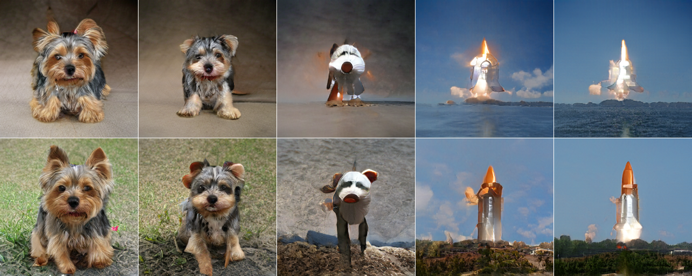

I began the week with a full day on Monday. My teammates from the Case For Waste Design Intervention group joined me in meetings with various professors, professionals and ex-students related to the topic of Biomaterials. We met up at IAAC to discuss questions and topics we would like to bring up with each person, then had our first online call at 10.30 with Tomas Diez. We were told to try and define meaning in the workshop which we would host, rather than jumping straight in without any purpose. This mindset contrasted with the tips which Mariana provided us: to just dive straight into the workshop and the insights would likely come along later.
This is why it was useful to talk to Jana and Roger, two ex MDEF students, at the end of the day. We met in their studio near Hospitalet to discuss any tips they had when dealing with biomaterials, along with any recommendations on how to host a workshop and present their work. We arrived at a great middle ground between Mariana and Tomas’ contrasting approaches. It was very helpful to receive insight from two previous students not only regarding the Design Intervention but also the course as a whole. Here are some notes from the meeting:
Notes from our Design Intervention meetings
In between all the meetings, we also had our “Almost Useless Machines” presentations, due to the fact that we did not have time for the presentations after we finished shooting the videos. It was really interesting seeing the concepts that others had come up with, along with the final videos. I find that we had a large variety of storytelling methods, and a vast array of creative ideas.
The days following Monday were dedicated to a new course surrounding Artificial Intelligence. It was great to learn about how datasets influence the result, the differences between Machine Learning and Deep Learning, and all the amazing artistic outcomes these tools could yield.

Machine Learning used to turn a dog into a rocket ship.
A cluste of images I found interesting.
One of the exercises we had to do was take 100 photos of Poblenou, then send them to the professors, along with 100 random photos. Base on these two sets, the professors would generate an AI map classifying the images.
The result was a 3D/2D map filled with clusters based on the images the AI found similar. It was interesting to try and guess what parameters were slected when grouping these images: sometimes it seemed like colours, contrast and geometric shapes, but other times it felt like the AI identified faces or landscapes.
We then moved on to create images by using projects on Google Colab. Initially, the AI generated totally new faces, based on datasets. The anormality of the face could be adjusted by using the "truncation_psi". By selecting 1, we could generate an "abnormal" face, deviating from the standard images provided in the dataset, whereas by selecting 0, it would show you the "most average" face which seemed to be a total mix of the dataset. It was interesting to note that the face looked androgenous, with fair skin, brown eyes and hair. I believe, this said a lot about the nature of the photos provided in the dataset.
Screenshot of Google Colab Project.
By talking about Machine Learning, we inevitably talked about biases and stereotypes. When defining a dataset with which to train the AI, it’s important to consider how homogenous it is, as well as what surprising associations may be made. Reflecting on that in itself is an interesting take on how we view the world.
We created "Alternate Versions of Ourself" by having the AI generate
Original image versus AI generate image.
Creating a 4D representation of our system.
I felt very inspired by the possibilities of generative art, since it was something I was interested in to begin with. I loved all the audiovisual projects where AI would generate new paintings or images based off of vast datasets. It was particularly eerie at times, and for some reason many people agreed that there was a slight creepiness in the images “drawn” or “painted” by a computer. Although we know that computers don’t operate in the same ways as we do, it still felt strange to see the world through an AI’s eyes.
I wish I could have learned more in depth knowledge on how to actually do these things from scratch, but it felt like it could have been a Master’s on its own. It was great to see all the possibilities of AI art and I would love to deepen my knowledge on my own. Personally, I think that generative art could expand a lot in the upcoming years, given that we are always fascinated by technological advances and the different lenses they offer for us to see the world.
Our project for this week was to ideate a project utilising artificial intelligence. You can find my group's final presentation here: